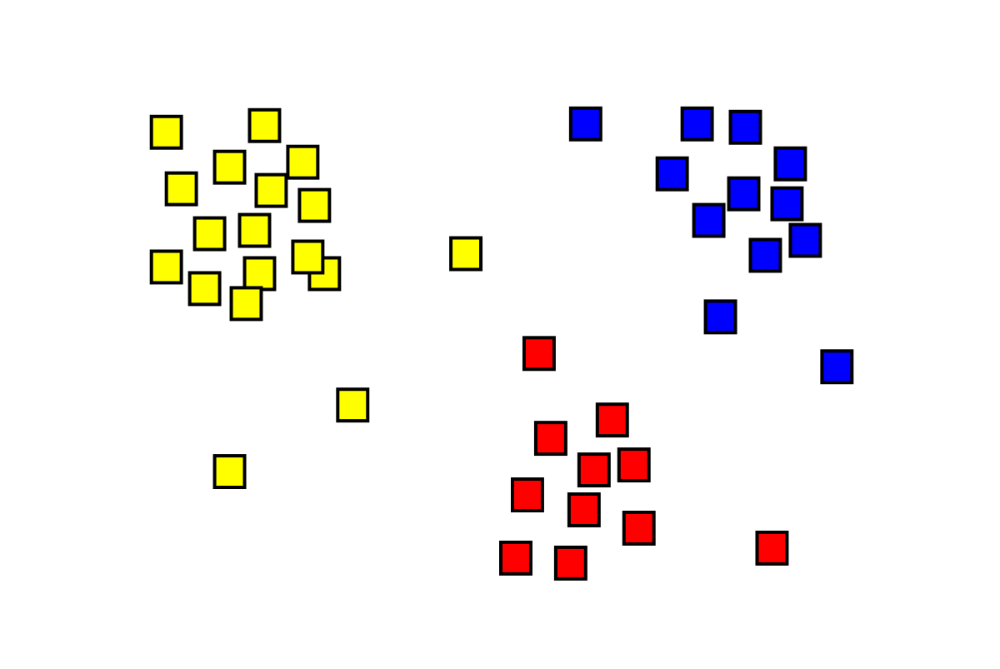

Projects
K-Means Clustering

- Use Java to recreate the bases of K-means-clustering
- Allow scalability by following SOLID principles
Freelance Marketplace Website

- Use PHP and MySQLi and RestFul API to setup a robust back-end
- Design a expansive and efficient database for vertical and horizontal scalability
Machine Learning

- Used TensorFlow libraries in PyCharm to train models
- Trained linear regression, SVM, KNN and K means clustering models.
Real-Time Data Telemetry

- Use PCAN-Basic, Cantools, Python-Can, Tkinter and Matplotlib libraries in Python to read and display CAN data
- Use multithreading to read, parse and display the data in real time